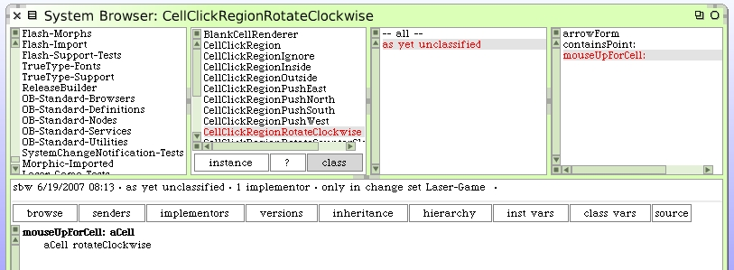
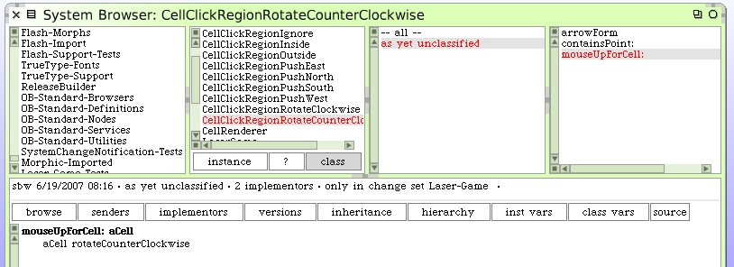
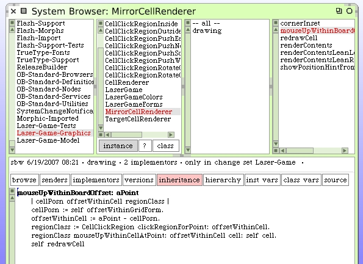
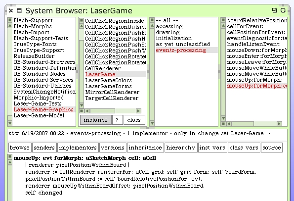

Handling the mouse-up event in our rotate click-regions is easy since we already wrote the code on the mirror cells. Here's our clockwise handler.
Counter-clockwise is equally simple.
To complete the work we need to go back to the MirrorCellRenderer and send the messages to process the mouse-up event and redraw the cell.
The last step is to go back to the LaserGame morph and complete the sequence where we began our journey.
We need to add a special accessor method to the CellRenderer class. This instance method should be added.
cell
^self grid at: self cellLocation.
Open up your LaserGame morph if it's not already open and try clicking in the rotate regions of mirror cells. It works.
This is a good place to save your image and take a break. We have a lot of good things happening in our little game. You may have noticed while playing with your LaserGame morph that there's some clean-up issues we'll have to deal with. The hint arrows aren't getting cleaned up very well and we see them hanging around after the cursor leaves the cell. Also, if you tried firing the laser and moving mirrors around you probably noticed that we have additional work to do regarding what happens to the laser and cell states when a mirror moves.
Still, this looks like a fun little game is starting to develop.